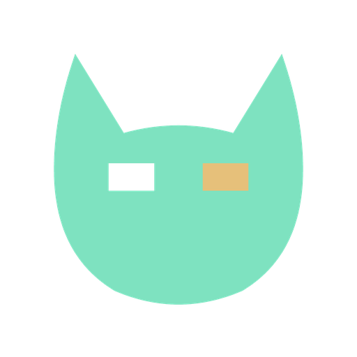

KodKod Remote for iPhone and Kod for Mac · effective October 8, 2026
Kod Remote collects nothing. It has no account, no analytics, no advertising, no tracking and no third-party code. It talks to one thing: the Mac you pair it with.
Kod Remote shows the sessions running in Kod on your own Mac — their titles, status, last messages and terminal text — and sends what you type back to them. All of it goes directly between your iPhone and your Mac, over your Wi-Fi or your Tailscale network, encrypted with TLS and checked against your Mac's own key. It never passes through a server of ours. We — Felis AI — never see it, and could not if we wanted to.
Nothing else is kept. Deleting the app removes the preferences; to revoke the token everywhere at once, use Regenerate token in Kod → Settings → Mobile on your Mac.
Kod runs on your Mac and sends nothing to us. It starts the claude
and codex command-line tools under your own accounts; what those tools
send to Anthropic or OpenAI is covered by those providers' own policies, as it would
be without Kod.
Kod and Kod Remote are developer tools and are not directed at children.
If this ever changes, this page will say so, with a new date at the top. Questions are welcome as a GitHub issue.